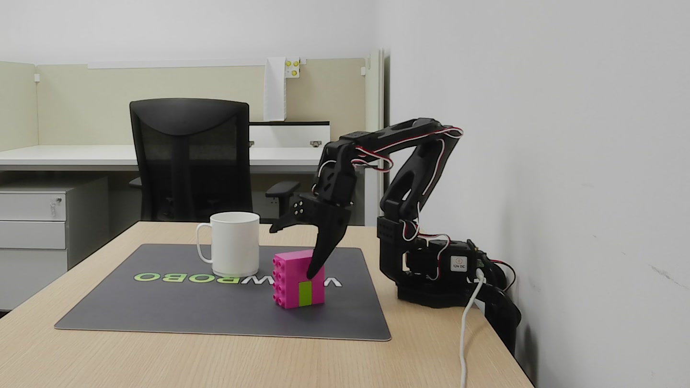

Sweden–Singapore teleoperation
An operator in Sweden checks the pink block above a cup in Singapore. The operator’s view moves through a 3D point cloud; the physical camera shows the robot completing the placement.
Recorded live. The two recordings are aligned for viewing.
Overview
Robot Teleop Vision combines a remote RGB-D point cloud with a head-tracked desktop viewpoint. An ordinary webcam estimates the operator’s head position, while a depth camera captures the robot’s workspace. Moving left, right, closer, or farther changes the view of the captured scene.
The aim is to make spatial checks easier during teleoperation. When a gripper holds an object above a container, a frontal image can leave the object’s depth ambiguous. A second viewpoint helps the operator check alignment and clearance before releasing it. The recorded example uses an SO-101 leader–follower pair between Sweden and Singapore.
The code is open source and separates the viewing system from robot-specific controls. This prototype demonstrates the interaction; comparative task performance has not yet been measured.
Live teleoperation
The full recorded demonstration, with the original operator narration. The alignment check stays continuous through the release.
Physical SO-101 robot · live RGB-D scene · recorded Sweden–Singapore session
A clearer view of the idea
A virtual arm, a block, and a bowl make the same alignment question repeatable. This recorded simulation uses synthetic geometry and virtual objects.
Left: fixed geometry reference. Right: a moving view of synthetic depth.Moving view of a synthetic depth cloud. Open the two-view comparison. Motion is replayed automatically.
Open the moving view at full size
Check depth before release
Inspect the block from the front, then move sideways to check the gap above the bowl. A repeatable scene isolates the viewing interaction from camera noise and network conditions.
Practice with a virtual target
The local demo supports replay and keyboard control. A separate local controller can send head position or leader-arm input to the virtual robot.
Hardware & system

At the operator
A browser, display, and webcam for head-position tracking. The SO-101 leader supplies joint input for manipulation.
At the robot
An SO-101 follower and an Intel RealSense RGB-D camera. The stack supports D455, D435, and D435i cameras.
In the software
Godot, Python, a browser point-cloud renderer, and modular robot controls. The project is released under Apache 2.0.
Hardware and setup documentationCaptured geometry, changing viewpoints
A new viewpoint does not create surfaces that a depth camera never observed. One camera can leave holes behind objects and at occlusion boundaries. Multiple calibrated cameras can contribute additional coverage; the live example above uses one remote depth stream.
The simulation provides a solid view of its generated world and a point-cloud mode sampled by one fixed virtual depth camera. That point cloud contains only the first surfaces its rays reach. These views explain the interaction; they do not measure real-world reconstruction, task performance, or latency.